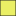

<!doctype html>
<html lang="en">
    <head>
        <meta charset="utf-8">
        <meta http-equiv="X-UA-Compatible" content="IE=edge">
        <meta name="viewport" content="initial-scale=1,user-scalable=no,maximum-scale=1,width=device-width">
        <meta name="mobile-web-app-capable" content="yes">
        <meta name="apple-mobile-web-app-capable" content="yes">
        <link rel="stylesheet" href="css/leaflet.css">
        <link rel="stylesheet" href="css/L.Control.Layers.Tree.css">
        <link rel="stylesheet" href="css/qgis2web.css">
        <link rel="stylesheet" href="css/fontawesome-all.min.css">
        <link rel="stylesheet" href="css/leaflet-measure.css">
        <style>
        html, body, #map {
            width: 100%;
            height: 100%;
            padding: 0;
            margin: 0;
        }
        </style>
        <title>Agrivolare potentials in Altena</title>
    </head>
    <body>
        <div id="map">
        </div>
        <script src="js/qgis2web_expressions.js"></script>
        <script src="js/leaflet.js"></script>
        <script src="js/L.Control.Layers.Tree.min.js"></script>
        <script src="js/leaflet.rotatedMarker.js"></script>
        <script src="js/leaflet.pattern.js"></script>
        <script src="js/leaflet-hash.js"></script>
        <script src="js/Autolinker.min.js"></script>
        <script src="js/rbush.min.js"></script>
        <script src="js/labelgun.min.js"></script>
        <script src="js/labels.js"></script>
        <script src="js/leaflet-measure.js"></script>
        <script src="data/Altena_1.js"></script>
        <script src="data/NONRess_Suit_New_2.js"></script>
        <script>
        var map = L.map('map', {
            zoomControl:false, maxZoom:28, minZoom:1
        }).fitBounds([[51.65858175371406,4.7834232251903845],[51.831073297552756,5.148378276487709]]);
        var hash = new L.Hash(map);
        map.attributionControl.setPrefix('<a href="https://github.com/tomchadwin/qgis2web" target="_blank">qgis2web</a> &middot; <a href="https://leafletjs.com" title="A JS library for interactive maps">Leaflet</a> &middot; <a href="https://qgis.org">QGIS</a>');
        var autolinker = new Autolinker({truncate: {length: 30, location: 'smart'}});
        // remove popup's row if "visible-with-data"
        function removeEmptyRowsFromPopupContent(content, feature) {
         var tempDiv = document.createElement('div');
         tempDiv.innerHTML = content;
         var rows = tempDiv.querySelectorAll('tr');
         for (var i = 0; i < rows.length; i++) {
             var td = rows[i].querySelector('td.visible-with-data');
             var key = td ? td.id : '';
             if (td && td.classList.contains('visible-with-data') && feature.properties[key] == null) {
                 rows[i].parentNode.removeChild(rows[i]);
             }
         }
         return tempDiv.innerHTML;
        }
        // add class to format popup if it contains media
		function addClassToPopupIfMedia(content, popup) {
			var tempDiv = document.createElement('div');
			tempDiv.innerHTML = content;
			if (tempDiv.querySelector('td img')) {
				popup._contentNode.classList.add('media');
					// Delay to force the redraw
					setTimeout(function() {
						popup.update();
					}, 10);
			} else {
				popup._contentNode.classList.remove('media');
			}
		}
        var title = new L.Control({'position':'topright'});
        title.onAdd = function (map) {
            this._div = L.DomUtil.create('div', 'info');
            this.update();
            return this._div;
        };
        title.update = function () {
            this._div.innerHTML = '<h2>Agrivolare potentials in Altena</h2>';
        };
        title.addTo(map);
        var abstract = new L.Control({'position':'bottomright'});
        abstract.onAdd = function (map) {
            this._div = L.DomUtil.create('div',
            'leaflet-control abstract');
            this._div.id = 'abstract'
                this._div.setAttribute("onmouseenter", "abstract.show()");
                this._div.setAttribute("onmouseleave", "abstract.hide()");
                this.hide();
                return this._div;
            };
            abstract.hide = function () {
                this._div.classList.remove("abstractUncollapsed");
                this._div.classList.add("abstract");
                this._div.innerHTML = 'i'
            }
            abstract.show = function () {
                this._div.classList.remove("abstract");
                this._div.classList.add("abstractUncollapsed");
                this._div.innerHTML = '<br />Suitability<br />Permanent arable land<br />Crop type<br />Code<br />Apples. Planted current season.<br />1095<br />Apples. Planted prior to current season.<br />1096<br />Pears. Planted current season.<br />1097<br />Pears. Planted prior to current season.<br />1098<br />Grassland, permanent<br />265<br />Cherries, sweet<br />2328<br />High-stemmed orchard<br />2628<br />Plums<br />1870<br />Distance to farrm<br />< 200 m<br />200-500 m<br />> 500 m <br /><br /><br /><br /><br />Restriction Layers<br />Buffer zone (m)<br />Water ways and Water body<br />10<br />Wetlands<br />10<br />Forest<br />50<br />Railroads<br />15<br />Roads<br />20-40<br />Protected areas:<br />Nature 2000, Natural protected areas<br />50<br />Building<br />100<br />Non Permanent arable land<br />50<br />';
        };
        abstract.addTo(map);
        var zoomControl = L.control.zoom({
            position: 'topleft'
        }).addTo(map);
        var measureControl = new L.Control.Measure({
            position: 'topleft',
            primaryLengthUnit: 'meters',
            secondaryLengthUnit: 'kilometers',
            primaryAreaUnit: 'sqmeters',
            secondaryAreaUnit: 'hectares'
        });
        measureControl.addTo(map);
        document.getElementsByClassName('leaflet-control-measure-toggle')[0].innerHTML = '';
        document.getElementsByClassName('leaflet-control-measure-toggle')[0].className += ' fas fa-ruler';
        var bounds_group = new L.featureGroup([]);
        function setBounds() {
        }
        map.createPane('pane_OSMStandard_0');
        map.getPane('pane_OSMStandard_0').style.zIndex = 400;
        var layer_OSMStandard_0 = L.tileLayer('http://tile.openstreetmap.org/{z}/{x}/{y}.png', {
            pane: 'pane_OSMStandard_0',
            opacity: 1.0,
            attribution: '<a href="https://www.openstreetmap.org/copyright">© OpenStreetMap contributors, CC-BY-SA</a>',
            minZoom: 1,
            maxZoom: 28,
            minNativeZoom: 0,
            maxNativeZoom: 19
        });
        layer_OSMStandard_0;
        map.addLayer(layer_OSMStandard_0);
        function pop_Altena_1(feature, layer) {
            var popupContent = '<table>\
                    <tr>\
                        <th scope="row">naam</th>\
                        <td>' + (feature.properties['naam'] !== null ? autolinker.link(String(feature.properties['naam']).replace(/'/g, '\'').toLocaleString()) : '') + '</td>\
                    </tr>\
                </table>';
            var content = removeEmptyRowsFromPopupContent(popupContent, feature);
			layer.on('popupopen', function(e) {
				addClassToPopupIfMedia(content, e.popup);
			});
			layer.bindPopup(content, { maxHeight: 400 });
        }

        function style_Altena_1_0() {
            return {
                pane: 'pane_Altena_1',
                opacity: 1,
                color: 'rgba(35,35,35,1.0)',
                dashArray: '',
                lineCap: 'butt',
                lineJoin: 'miter',
                weight: 1.0, 
                fill: true,
                fillOpacity: 1,
                fillColor: 'rgba(183,72,75,0.0)',
                interactive: true,
            }
        }
        map.createPane('pane_Altena_1');
        map.getPane('pane_Altena_1').style.zIndex = 401;
        map.getPane('pane_Altena_1').style['mix-blend-mode'] = 'normal';
        var layer_Altena_1 = new L.geoJson(json_Altena_1, {
            attribution: '',
            interactive: true,
            dataVar: 'json_Altena_1',
            layerName: 'layer_Altena_1',
            pane: 'pane_Altena_1',
            onEachFeature: pop_Altena_1,
            style: style_Altena_1_0,
        });
        bounds_group.addLayer(layer_Altena_1);
        map.addLayer(layer_Altena_1);
        function pop_NONRess_Suit_New_2(feature, layer) {
            var popupContent = '<table>\
                    <tr>\
                        <th scope="row">value</th>\
                        <td>' + (feature.properties['value'] !== null ? autolinker.link(String(feature.properties['value']).replace(/'/g, '\'').toLocaleString()) : '') + '</td>\
                    </tr>\
                    <tr>\
                        <th scope="row">Suitabilit</th>\
                        <td>' + (feature.properties['Suitabilit'] !== null ? autolinker.link(String(feature.properties['Suitabilit']).replace(/'/g, '\'').toLocaleString()) : '') + '</td>\
                    </tr>\
                    <tr>\
                        <th scope="row">Area_ha</th>\
                        <td>' + (feature.properties['Area_ha'] !== null ? autolinker.link(String(feature.properties['Area_ha']).replace(/'/g, '\'').toLocaleString()) : '') + '</td>\
                    </tr>\
                </table>';
            var content = removeEmptyRowsFromPopupContent(popupContent, feature);
			layer.on('popupopen', function(e) {
				addClassToPopupIfMedia(content, e.popup);
			});
			layer.bindPopup(content, { maxHeight: 400 });
        }

        function style_NONRess_Suit_New_2_0(feature) {
            switch(String(feature.properties['Suitabilit'])) {
                case 'High':
                    return {
                pane: 'pane_NONRess_Suit_New_2',
                opacity: 1,
                color: 'rgba(248,255,31,1.0)',
                dashArray: '',
                lineCap: 'butt',
                lineJoin: 'miter',
                weight: 1.0, 
                fill: true,
                fillOpacity: 1,
                fillColor: 'rgba(248,255,31,1.0)',
                interactive: true,
            }
                    break;
                case 'Low':
                    return {
                pane: 'pane_NONRess_Suit_New_2',
                opacity: 1,
                color: 'rgba(235,186,79,1.0)',
                dashArray: '',
                lineCap: 'butt',
                lineJoin: 'miter',
                weight: 1.0, 
                fill: true,
                fillOpacity: 1,
                fillColor: 'rgba(235,186,79,1.0)',
                interactive: true,
            }
                    break;
                case 'Medium':
                    return {
                pane: 'pane_NONRess_Suit_New_2',
                opacity: 1,
                color: 'rgba(253,222,111,1.0)',
                dashArray: '',
                lineCap: 'butt',
                lineJoin: 'miter',
                weight: 1.0, 
                fill: true,
                fillOpacity: 1,
                fillColor: 'rgba(253,227,111,1.0)',
                interactive: true,
            }
                    break;
                default:
                    return {
                pane: 'pane_NONRess_Suit_New_2',
                opacity: 1,
                color: 'rgba(35,35,35,1.0)',
                dashArray: '',
                lineCap: 'butt',
                lineJoin: 'miter',
                weight: 1.0, 
                fill: true,
                fillOpacity: 1,
                fillColor: 'rgba(234,239,101,1.0)',
                interactive: true,
            }
                    break;
            }
        }
        map.createPane('pane_NONRess_Suit_New_2');
        map.getPane('pane_NONRess_Suit_New_2').style.zIndex = 402;
        map.getPane('pane_NONRess_Suit_New_2').style['mix-blend-mode'] = 'normal';
        var layer_NONRess_Suit_New_2 = new L.geoJson(json_NONRess_Suit_New_2, {
            attribution: '',
            interactive: true,
            dataVar: 'json_NONRess_Suit_New_2',
            layerName: 'layer_NONRess_Suit_New_2',
            pane: 'pane_NONRess_Suit_New_2',
            onEachFeature: pop_NONRess_Suit_New_2,
            style: style_NONRess_Suit_New_2_0,
        });
        bounds_group.addLayer(layer_NONRess_Suit_New_2);
        map.addLayer(layer_NONRess_Suit_New_2);
        var overlaysTree = [
            {label: 'NONRess_Suit_New<br /><table><tr><td style="text-align: center;"></td><td>High</td></tr><tr><td style="text-align: center;"></td><td>Low</td></tr><tr><td style="text-align: center;"></td><td>Medium</td></tr><tr><td style="text-align: center;"></td><td></td></tr></table>', layer: layer_NONRess_Suit_New_2},
            {label: ' Altena', layer: layer_Altena_1},
            {label: "OSM Standard", layer: layer_OSMStandard_0},]
        var lay = L.control.layers.tree(null, overlaysTree,{
            //namedToggle: true,
            //selectorBack: false,
            //closedSymbol: '&#8862; &#x1f5c0;',
            //openedSymbol: '&#8863; &#x1f5c1;',
            //collapseAll: 'Collapse all',
            //expandAll: 'Expand all',
            collapsed: true,
        });
        lay.addTo(map);
        setBounds();
        </script>
    </body>
</html>
